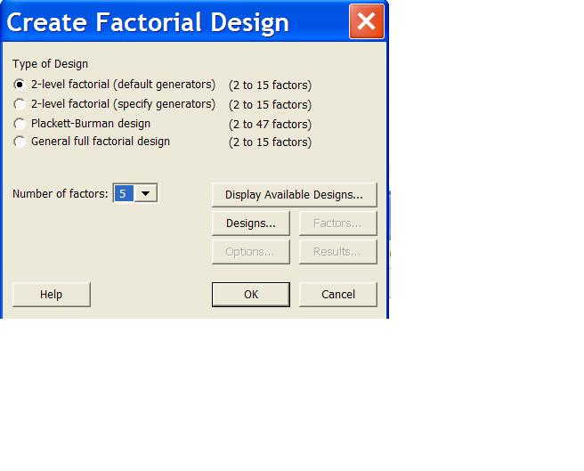
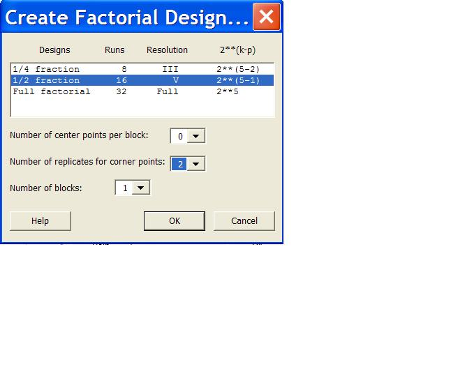
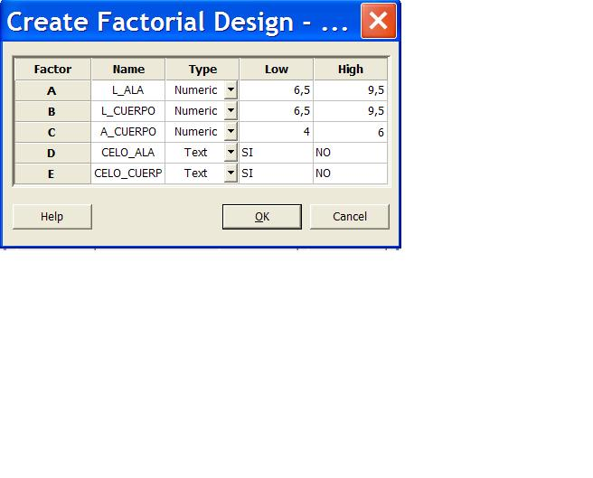
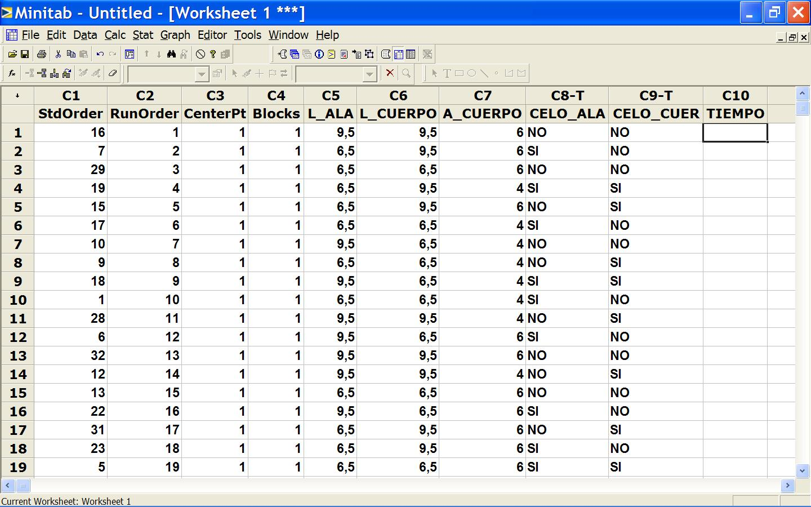

13. DoE 1º parte
La herramienta de Diseño de Experimentos es la culminación del conjunto de técnicas que están a disposición del investigador que trabaja en la mejora de un proceso.
Este es el módulo para el cual nos hemos estado preparando a lo largo de toda la asignatura por lo que, desde el punto de vista práctico, es el más importante.
Lo que aquí aprenderemos no solo será importante dentro del contexto Seis Sigma, sino que se trata de una herramienta de extraordinario potencial para cualquier tarea de búsqueda de relaciones entre variables de entrada y salida.
El alumno será capaz de:
a) plantear y resolver DoE fraccionarios de varias variables
b) plantear y resolver DoE completos de varias variables
El material básico de lectura es el archivo "13.pdf", que se divide en los siguientes bloques:
Bloque 1) transparencias 1 a 13.
Los conceptos básicos acerca de DoE. Las transparencias más importantes son las nº 7 y nº 10, donde se describe tanto la estrategia general de la experimentación como la delicada cuestión de la elección de los niveles de las variables.
Bloque 2) transparencias 14 a 37.
Donde se trata el trema DoE completo. Si bien en la práctica, como veremos en la aplicación al caso, siempre se trabaja primero con un DoE fraccionario, por motivos didácticos debemos explicar en primer lugar el DoE completo.
NOTA: Las transparencias 31 a 37 son material informativo extra, que no se utilizará para resolver el caso.
Bloque 3) transparencias 38 a 71.
Donde se trata el tema DoE fraccionario.
Lo más importante es que el alumno repita los ejemplos propuestos, paso a paso.
Se propone al alumno trabajar en dos fases:
1º fase) DoE fraccionario
El objetivo será el de completar la identificación preliminar de variables significativas que determinan el tiempo de vuelo del helicóptero; lo suyo sería que, al fin de esta fase, nos quedásemos con no más de 3 variables. Es probable que tanto los análisis gráficos como los ensaso de hipótesis nos permitan descartar alguna variable poco influyente: tanto mejor, el profesor ya os lo irá indicando a medida que vayáis realimentando vuestros resultados. (Pista: el Clip suele ser una variable fácil de determinar su efecto)
Por ejemplo, con 5 variables iniciales y 1/2 fracción tendremos (2^5)/2=16 prototipos diferentes, lo que es algo asumible.
P. ej. con 5 variables se trabajaría del siguiente modo:


Las variables y sus niveles podrían ser (esto dependerá de los resultados obtenidos en los análisis gráficos y pruebas de hipótesis)

Resultaría una hoja de datos como la siguiente (no exactamente la misma puesto que los casos están aleatoriamente mezclados)

La columna de tiempos es lo que habrá que rellenar con los datos reales que toméis.
2º fase) DoE completo
El objetivo será el de determinar, con alta seguridad estadística, las variables determinantes del tiempo de vuelo y la ecuación que las relaciona.

|
Cuando el número de variables es grande, con el fin de abaratar el experimento.
| |
|
Cuando el número de variables es pequeño (no mucho más de 3)
| |
|
Cuando aunque el número de variables es grande el presupuesto para la experimentación está agotado, siempre que existan sospechas fundadas sobre cuáles variables o relaciones de variables son las más probables de ser ciertas.
|
Deténgase a pensar el alumno sobre el camino que hemos recorrido desde el momento que se nos dijo que la calidad o el coste del producto no eran satisfactorios hasta que hemos llegado al establecimiento de las relaciones causales entre entradas (las responsables últimas de calidad y del coste) y las salidas (tiempo de vuelo, en nuestro caso).
Hemos conseguido pasar de la queja de un cliente o una cuenta de resultados preocupante (algo siempre vago y poco preciso) a un conocimiento completo de qué podemos hacer para llevar esos resultados a lo deseado.